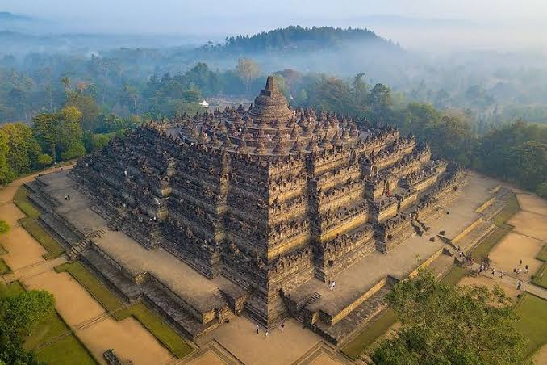
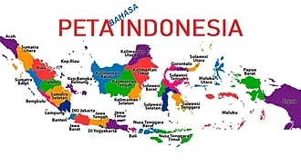

Selamat Datang di Indonesia
indonesia adalah negara kepulauan terbesar di dunia yang terletak di kawasan asia tenggara dan oseania
indonesia menarik karena gabungan alam luar biasa budaya kaya,sejarah unik,dan keramahan orangnya

Informasi Dasar Indonesia
| Informasi | Jawaban |
|---|---|
| Nama Negara | Indonesia |
| Ibu Kota | Dki jakarta |
| Mata Uang | Rupiah |
| Bahasa Nasional | Bahasa Indonesia |
| Lagu Kebangsaan | indonesia raya |
| Dasar Negara | Pancasila |
| Bentuk Negara | negara kesatuan yang berbentuk republik |
Letak Geografis Indonesia
letaknya di asia tenggara posisi silang dunia di antara benua asia dan benua australia di antara samudera hindia dan samudera pasifik
sebelah utara : malaysia selat malaka laut cina selatan sebelah selatan: timor leste samudra hindia sebelah barat: perairan india sebelah timur: papua nugini samudra pasifik

Kekayaan Indonesia
karena iklim tropis dan letak strategis
-
pertanian dan perkebunan
- sawit
- kopi
- teh
-
kehutanan
- kayu berharga
- tanaman obat
-
kelautan dan perikanan
- ikan
- rumput laut
- terumbu karang
-
pertambangan
- intan
- bauksit
- timah
-
sumber daya air
- sungai besar
- danau
- air tanah
-
Sumber daya alam
- batu bara
- minyak bumi
- gas alam
-
Bahan tambang berharga
- perak
- timah
- besi
-
keanekaragaman hayati
- komodo
- orang utan
- bunga rafflesia
-
hasil perkebunan
- cokelat
- teh
- rempah rempah
-
keindahan alam
- pantai
- pegunungan
- pulau indah
Keanekaragaman Indonesia
Keanekaragaman diringkas menjadi semboyan bhinneka tunggal ika beragam tapi satu kesatuan
- ada 1.300+ suku di indonesia contoh: jawa,sunda,batak,minangkabau,dayak,bugis,bali,melayu
- ada 700+ bahasa daerah di indonesia contoh:bahasa jawa,sunda,minang,batak,bugis,bali,melayu bahasa indonesia sebagai bahasa persatuan
- ada 6 agama resmi di indonesia contoh: islam,kristen,katolik,buddha,hindu,konghucu
- rumah adat,seni,pakaian
- rendang: sumbar gudeg: jogja pempek: palembang
- keanekaragaman tumbuhan
- keanekaragaman hewan
- alat musik Tradisional
- rumah adat,seni,pakaian
- Tarian adat atau daerah
Fakta Menarik Indonesia
negara kepulauan terbesar di dunia
-
punya banyak gunung berapi aktif
-
pusat kehidupan laut terkaya
-
situs candi terbesar
-
keanekaragaman manusia luas
-
negara berpenduduk muslim terbanyak
-
punya pulau terpadat
-
Rumah hewan langka
-
punya bunga terbesar dan tertinggi
-
salah satu negara dengan keanekaragaman hayati tinggi
Tempat yang Ingin Kami Kunjungi
- jogja
- pantai pangandaran
- pantai sukabumi
- mesjid aljabar
- wahoo